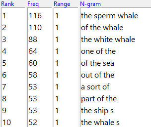
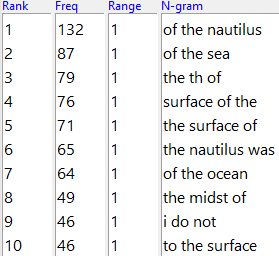
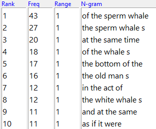
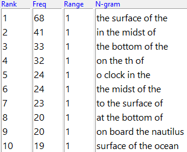
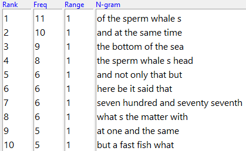
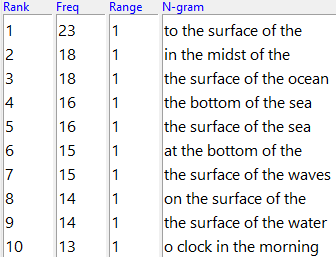
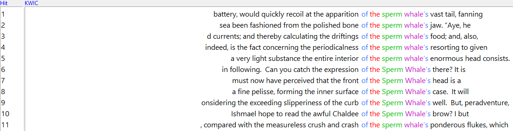
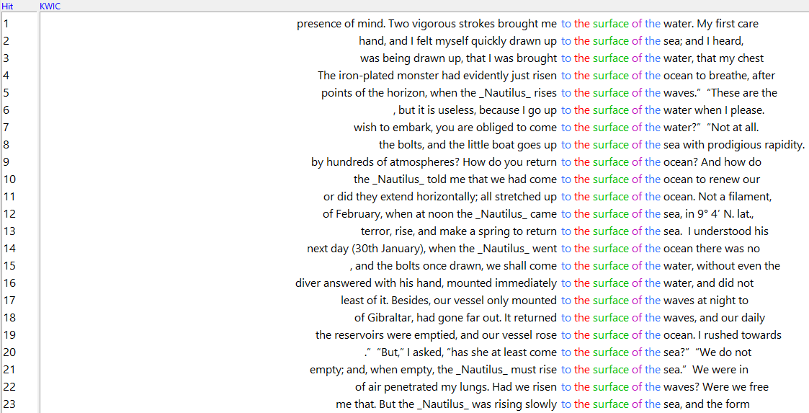

For this assigmnent, I have chosen to compare Moby Dick and 20,000 Leagues Under The Sea.
I chose these two stories, as they're both mid-19th century novels relating to the ocean, and I'm interested to see how their nautical-related language differs and are similar.
The Word Cloud comparison between Moby Dick and Twenty-Thousand Leagues Under The Sea is quite revealing in the similarities and differences in what each story emphasizes.
The first thing I noticed comparing the two clouds is that the word "said" is used almost at the exact same frequency, if word size is anything to go off of. Likewise, names
seem to also make up a good chunk of the words used in both stories. "Ahab" and "Nemo" are both very clearly used to great extent. I will say that I'm suprised at how large
"whale" is in Moby Dick. I knew it would be used a bit, but I wasn't expecting it to be so much larger than every other word. Same with "Nautilus." Typically, the names of ships
aren't used nearly as much as the names of characters or environmental words. It'd be interesting to see the context it's used in.


The Word Graph, like the Word Cloud, gives us some intersting insight into the differences and similarities between the two stories. What immedietly stands out to me, though this
shouldn't be too suprising, is the usage of "sea." "Sea" is the second most used term in Moby Dick, while it's the first most used term in Twenty-Thousand Leagues. That isn't too
shocking though. Both are maritime stories from the mid-1800s, it makes complete sense for "sea" to be used so much. What IS suprising for Moby Dick is just how often "like" is used.
This tells me that Mr. Melville liked his similies, compared to Mr. Verne who prefers dialogue (as seen by the larger use of "said"). This last bit is interesting thoug, as I could swear
that the saids in the word clouds are about the same size. It's intersting then that it's so much more frequent in Twenty-Thousand Leagues than it is in Moby Dick.


Here are the first 10 results for the top Ngrams of 3 units. The very first thing I noticed when seeing this data is how many times "of the" is used in both stories. Phrases such as "of the
whale," "of the nautilus," and "of the sea" are used repeatedly throughout the stories. In particular, the use of "of the sea" appears as the top 5 Ngrams of both Moby dick and Twenty-Thousand
Leagues. "Of the ocean" is also used 64 times in Twenty-Thousand Leagues, which is the exact same thing as "of the sea." Unsurprisingly, it appears a lot of sea talk appears in these books.


Like with the last images, this is the top 10 4 Ngrams for both books. There really isn't much I wanted to point out here, other than how many times "sperm whale" is referrenced."


Here are the top 10 5 Ngrams for the two stories. Like with the 4 Ngrams, there isn't too much I wanted to draw attention to. I do think it's funny how #3 for Moby Dick is "bottom of the sea"
while #3 for Twenty-Thousand Leagues is "surface of the ocean," two phrases that are polar opposite of each other. Funnier still is how Moby Dick is the story that takes place on the surface,
while Twenty-Thousand Leagues is the story that happens within the ocean.
Note to Bondar: I wanted to increase the size of the following 2 images to make them legible, but was unable to figure out how. Code should be in the .css file

There are 11 instances of "of the sperm whale's" in Moby Dick, the most frequent 5 Ngram phrase.

There are 23 instances of "to the surface of the" in Twenty-Thousand Leagues. Interesting how the word immedietly after the phrase in all 23 instances is water, sea, ocean, or waves.